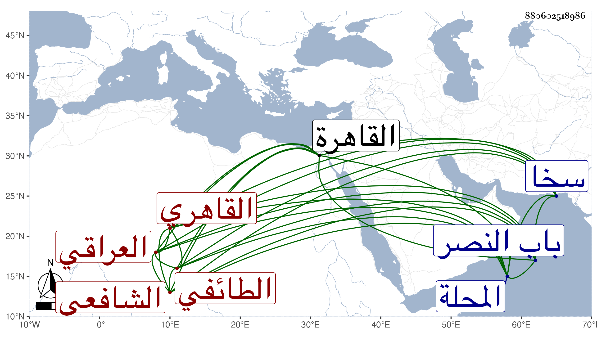

0902Sakhawi.DawLamic.ITO20230111-ara1.EIS1600.880602518986
Biography ID: 880602518986
أحمد بن حسين بن علي العراقي الطائفي ثم القاهري الشافعي . ولد بالطائفة من أعمال سخا وتحول إلى المحلة مع أخيه فحفظ القرآن بجامع الغمري ومختصر أبي شجاع ثم قدم القاهرة فقطنها ونزل في سعيد السعداء واقرأ بني البدر بن عليبة ، وتزوج وكان خيرا ساكنا ممن سمع مني . مات في ليلة الثلاثاء خامس عشر ذي القعدة سنة تسع وثمانين ودفن في تربة ابن عليبة خارج باب النصر وأظنه جاز الثلاثين رحمه الله وإيانا ، وبلغني أن بالطائفة ضريح الشيخ علي العراقي وهو جد أعلى لهذا .
